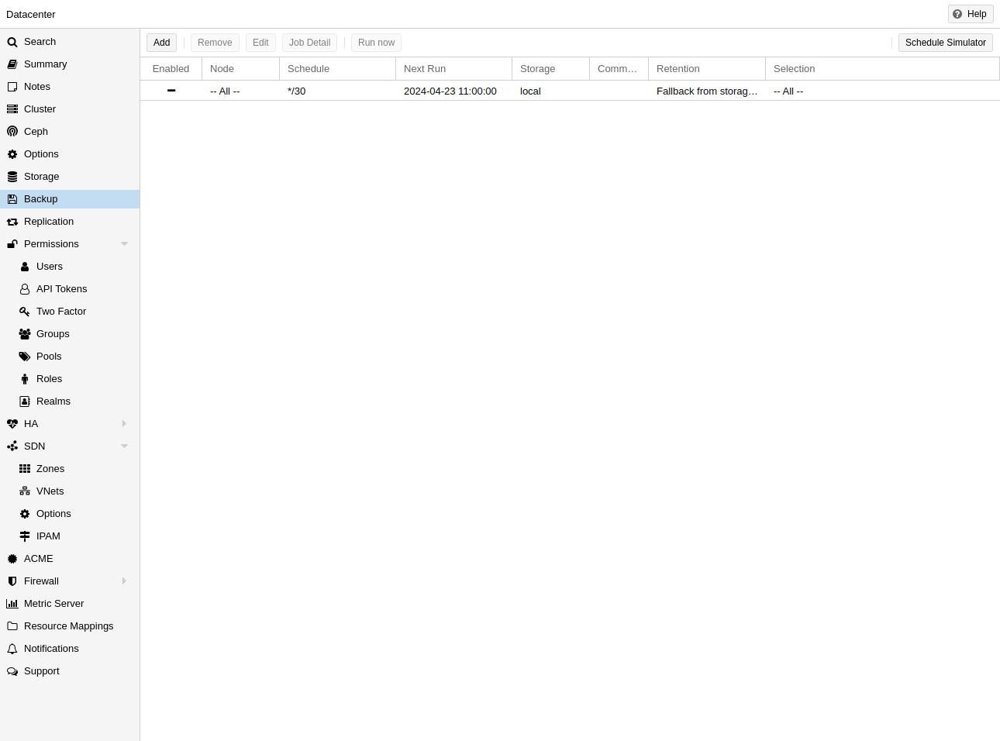
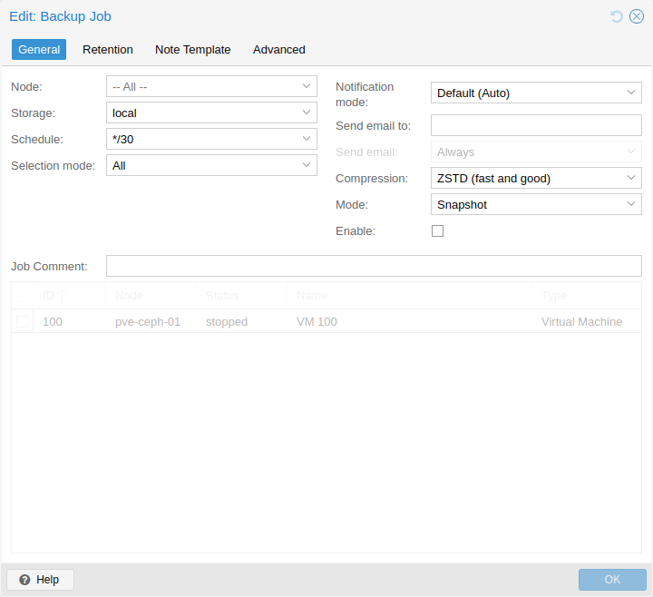
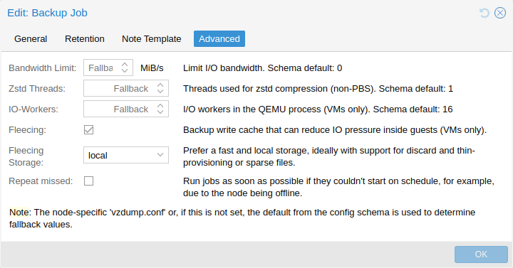
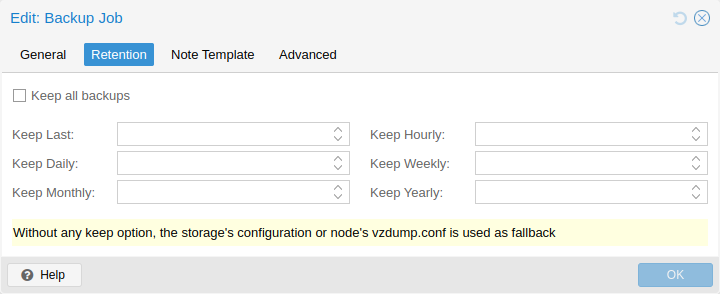
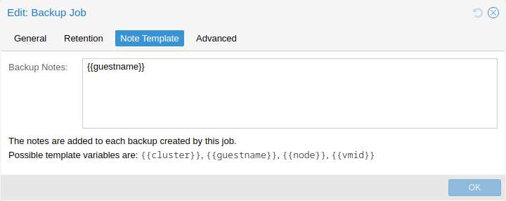

13. 백업 및 복원#
백업은 모든 합리적인 IT 배포에 필수적이며, Proxmox VE는 각 스토리지와 각 게스트 시스템 유형의 기능을 사용하여 완전히 통합된 솔루션을 제공합니다. 이를 통해 시스템 관리자는 백업의 일관성과 게스트 시스템의 다운타임 간의 모드 옵션을 통해 미세 조정할 수 있습니다.
Proxmox VE 백업은 항상 전체 백업입니다. VM/CT 구성과 모든 데이터가 포함됩니다. 백업은 GUI 또는 vzdump 명령줄 도구를 통해 시작할 수 있습니다 .
 백업 스토리지
백업 스토리지
백업을 실행하기 전에 백업 저장소를 정의해야 합니다. 저장소를 추가하는 방법에 대한 저장소 설명서를 참조 하세요. Proxmox Backup Server 저장소(백업이 중복 제거된 청크 및 메타데이터로 저장됨) 또는 파일 수준 저장소(백업이 일반 파일로 저장됨)가 될 수 있습니다. 고급 기능 때문에 전용 호스트에서 Proxmox Backup Server를 사용하는 것이 좋습니다. NFS 서버를 사용하는 것이 좋은 대안입니다. 두 경우 모두 나중에 오프사이트 보관을 위해 테이프 드라이브에 백업을 저장할 수 있습니다.
예약된 백업
백업 작업은 선택 가능한 노드와 게스트 시스템에 대해 특정 날짜와 시간에 자동으로 실행되도록 예약할 수 있습니다. 자세한 내용은 백업 작업 섹션을 참조하세요.
13.1. 백업 모드#
게스트 유형에 따라 일관성을 제공하는 방법(옵션 모드) 이 여러 가지 있습니다 .
VM에 대한 백업 모드:
정지(stop) 모드
이 모드는 VM 작업에서 짧은 다운타임을 감수하고 백업의 가장 높은 일관성을 제공합니다.
VM을 순서대로 종료한 다음 백그라운드 QEMU 프로세스를 실행하여 VM 데이터를 백업합니다.
백업이 시작된 후 VM은 이전에 실행 중이었다면 전체 작업 모드로 전환됩니다.
라이브 백업 기능을 사용하면 일관성이 보장됩니다.
일시 중지(suspend) 모드
이 모드는 호환성을 위해 제공되며 스냅샷 모드를 호출하기 전에 VM을 일시 중단합니다.
VM을 일시 중단하면 다운타임이 길어지고 반드시 데이터 일관성이 향상되지 않으므로 대신 스냅샷 모드를 사용하는 것이 좋습니다.
스냅샷(snapshot) 모드
이 모드는 작은 불일치 위험을 감수하고 가장 낮은 운영 다운타임을 제공합니다.
Proxmox VE 라이브 백업을 수행하여 VM이 실행되는 동안 데이터 블록을 복사합니다.
게스트 에이전트가 활성화되어 있고( agent: 1 ) 실행 중이면
guest-fsfreeze-freeze및guest-fsfreeze-thaw를 호출하여 일관성을 개선합니다.
Proxmox VE 라이브 백업은 모든 스토리지 유형에서 스냅샷과 유사한 의미론을 제공합니다. 기본 스토리지가 스냅샷을 지원할 필요는 없습니다. 또한 백업이 백그라운드 QEMU 프로세스를 통해 수행되므로 중지된 VM은 QEMU에서 VM 디스크를 읽는 동안 잠시 동안 실행 중인 것처럼 보입니다. 그러나 VM 자체는 부팅되지 않고 디스크만 읽힙니다.
컨테이너에 대한 백업 모드:
정지(stop) 모드
백업하는 동안 컨테이너를 중지합니다.
이로 인해 매우 긴 다운타임이 발생할 수 있습니다.
일시 중지(suspend) 모드
이 모드는 rsync를 사용하여 컨테이너 데이터를 임시 위치로 복사합니다(옵션 –tmpdir 참조 ). 그런 다음 컨테이너가 일시 중단되고 두 번째 rsync가 변경된 파일을 복사합니다. 그 후 컨테이너가 다시 시작(재개)됩니다.
이로 인해 다운타임이 최소화되지만 컨테이너 사본을 보관하기 위한 추가 공간이 필요합니다.
컨테이너가 로컬 파일 시스템에 있고 백업의 대상 저장소가 NFS/CIFS 서버인 경우
--tmpdir도 로컬 파일 시스템에 상주하도록 설정해야 합니다. 이렇게 하면 성능이 몇 배나 향상됩니다.백업 저장소가 NFS 서버인 경우 ACL을 일시 중단 모드로 사용하여 로컬 컨테이너를 백업하려는 경우에도 로컬
tmpdir을 사용해야 합니다.
스냅샷(snapshot) 모드
이 모드는 기본 저장소의 스냅샷 기능을 사용합니다.
먼저, 컨테이너가 데이터 일관성을 보장하기 위해 일시 중단됩니다. 컨테이너 볼륨의 임시 스냅샷이 만들어지고 스냅샷 내용이 tar 파일에 보관됩니다. 마지막으로, 임시 스냅샷이 다시 삭제됩니다.
스냅샷 모드에서는 모든 백업된 볼륨이 스냅샷을 지원하는 스토리지에 있어야 합니다. backup=no mount point 옵션을 사용하면 개별 볼륨을 백업에서 제외할 수 있습니다(따라서 이 요구 사항). 기본적으로 루트 디스크 마운트 포인트 외의 추가 마운트 포인트는 백업에 포함되지 않습니다. 볼륨 마운트 포인트의 경우 백업 옵션을 설정하여 백업에 마운트 포인트를 포함할 수 있습니다. 장치 및 바인드 마운트는 Proxmox VE 스토리지 라이브러리 외부에서 콘텐츠가 관리되므로 백업되지 않습니다.
13.1.1. VM 백업 플리싱#
VM에 대한 백업이 시작되면 QEMU는 블록 계층에 “복사 전 쓰기” 필터를 설치합니다. 이 필터는 새 게스트 쓰기 시 백업에 필요한 이전 데이터가 먼저 백업 대상으로 전송되도록 합니다. 게스트 쓰기는 이 작업이 완료될 때까지 차단되므로 아직 백업되지 않은 섹터에 대한 게스트 IO는 백업 대상의 속도에 따라 제한됩니다.
백업 플리싱을 사용하면 이러한 오래된 데이터는 백업 대상으로 직접 전송되는 대신 플리싱 이미지에 캐시됩니다. 이는 게스트 IO 성능을 향상시키고 특정 시나리오에서 중단을 방지할 수 있지만, 더 많은 저장 공간이 필요합니다.
저장소 local-lvm 에 생성된 플리싱 이미지로 VM 123 의 백업을 수동으로 시작하려면 다음을 실행하세요.
vzdump 123 --fleecing enabled=1,storage=local-lvm
언제나 그렇듯이, 구성 옵션을 통해 특정 백업 작업이나 노드 전체 폴백에 대한 옵션을 설정할 수 있습니다 . UI에서 백업 작업을 편집할 때 고급 탭에서 플리싱을 구성할 수 있습니다.
털리싱 저장소는 씬 프로비저닝 및 폐기 지원이 있는 빠른 로컬 저장소여야 합니다. 예를 들어 LVM-씬, RBD, 저장소 구성에 스파스 1이 있는 ZFS , 많은 파일 기반 저장소가 있습니다. 이상적으로 털리싱 저장소는 전용 저장소이므로 전체 실행이 다른 게스트에게 영향을 미치지 않고 백업만 실패합니다. 백업된 털리싱 이미지의 일부는 공간 사용량을 낮추기 위해 폐기됩니다.
폐기를 지원하지 않는 파일 기반 저장소(예: 버전 4.2 이전의 NFS)의 경우 저장소 구성에서 사전 할당을 해제 해야 합니다. qcow2 (저장소에서 지원할 때 플리싱 이미지의 형식으로 자동 사용) 와 함께 사용하면 이미 할당된 이미지 부분을 나중에 재사용할 수 있다는 장점이 있어 여전히 상당한 공간을 절약하는 데 도움이 될 수 있습니다.
13.1.2. CT 변경 감지 모드#
변경 감지 모드를 설정하면 pxar 아카이브의 인코딩 형식이 정의되고, Proxmox Backup Server를 대상으로 하는 컨테이너 백업에서 변경된 파일과 변경되지 않은 파일이 처리되는 방식이 정의됩니다.
변경 감지 모드 옵션은 작업을 편집하는 동안 고급 탭에서 개별 백업 작업에 대해 구성할 수 있습니다. 또한 이 옵션은 구성 옵션을 통해 노드 전체 폴백으로 설정할 수 있습니다 .
사용 가능한 변경 감지 모드는 3가지입니다.
모드 |
설명 |
|---|---|
Default |
pxar 포맷 버전 1을 사용하여 모든 파일을 읽고 단일 아카이브로 인코딩합니다. |
Data |
모든 파일을 읽고 인코딩하지만, pxar 포맷 버전 2를 사용하여 데이터와 메타데이터를 별도의 스트림으로 분리합니다. |
Metadata |
스트림을 분할하고 Data 와 같은 아카이브 형식 버전 2를 사용 하지만, 이전 스냅샷의 메타데이터 아카이브(있는 경우)를 사용하여 변경되지 않은 파일을 감지하고, 가능하면 디스크에서 파일 내용을 읽지 않고 해당 데이터 청크를 재사용합니다. |
변경 감지 모드 메타데이터(Metadata)를 사용하여 백업을 수행하려면 다음을 실행할 수 있습니다.
vzdump 123 --storage pbs-storage --pbs-change-detection-mode metadata
13.2. 백업 파일 이름#
vzdump의 최신 버전은 게스트 유형과 백업 시간을 파일 이름으로 인코딩합니다.
vzdump-lxc-105-2009_10_09-11_04_43.tar
이런 식으로 여러 백업을 같은 디렉토리에 저장할 수 있습니다. 다양한 보관 옵션으로 보관되는 백업 수를 제한할 수 있습니다. 아래의 백업 보관 섹션을 참조하세요.
13.3. 백업 파일 압축#
백업 파일은 다음 알고리즘 중 하나를 사용하여 압축할 수 있습니다: lzo , gzip 또는 zstd .
현재 Zstandard(zstd)가 이 세 가지 알고리즘 중 가장 빠릅니다. 멀티스레딩은 lzo와 gzip에 비해 zstd의 또 다른 장점입니다. Lzo와 gzip은 더 널리 사용되고 종종 기본적으로 설치됩니다.
멀티스레딩으로 인해 더 나은 성능을 제공하기 위해 gzip에 대한 드롭인 대체물로 pigz를 설치할 수 있습니다 . pigz 및 zstd의 경우 스레드/코어 수를 조정할 수 있습니다. 아래 구성 옵션을 참조하세요 .
백업 파일 이름의 확장자는 일반적으로 백업을 만드는 데 사용된 압축 알고리즘을 확인하는 데 사용할 수 있습니다.
.zst |
Zstandard (zstd) compression |
|---|---|
.gz or .tgz |
gzip compression |
.lzo |
lzo compression |
백업 파일 이름이 위의 파일 확장자 중 하나로 끝나지 않으면, 해당 파일은 vzdump로 압축되지 않은 것입니다.
13.4. 백업 암호화#
Proxmox Backup Server 저장소의 경우 백업의 클라이언트 측 암호화를 선택적으로 설정할 수 있습니다. 해당 섹션을 참조하세요.
13.5. 백업 작업#

백업을 수동으로 트리거하는 것 외에도 모든 가상 게스트 또는 일부 가상 게스트를 스토리지에 백업하는 주기적 작업을 설정할 수도 있습니다. UI에서
Datacenter → Backup 또는 /cluster/backup API 엔드포인트를 통해 작업을 관리할 수 있습니다. 둘 다 /etc/pve/jobs.cfg 에 작업 항목을 생성하고 , 이는 pvescheduler 데몬에서 구문 분석하여 실행합니다.
작업은 모든 클러스터 노드 또는 특정 노드에 대해 구성되고, 주어진 일정에 따라 실행됩니다. 일정의 형식은 systemd 캘린더 이벤트와 매우 유사합니다. 자세한 내용은 캘린더 이벤트 섹션을 참조하세요. UI의 Schedule(일정) 필드는 자유롭게 편집할 수 있으며, 드롭다운 목록에서 시작점으로 사용할 수 있는 몇 가지 예가 포함되어 있습니다.
저장소 또는 노드 구성의 옵션을 재정의하여 작업별 보존 옵션을 구성할 수 있으며, 백업과 함께 저장할 추가 정보에 대한 메모 템플릿 도 구성할 수 있습니다.
호스트가 오프라인이거나 예약된 시간 동안 pvescheduler가 비활성화되었을 때 예약된 백업이 실행되지 않으므로 따라잡기 동작을 구성할 수 있습니다. Repeat missed 옵션( UI의 Advanced 탭, config의 repeat-missed)을 활성화하면 스케줄러에 가능한 한 빨리 놓친 작업을 실행하도록 지시할 수 있습니다.

백업 성능을 조정하기 위한 몇 가지 설정이 있습니다(일부는 UI의 고급(Advanced) 탭에 표시됨). 가장 주목할 만한 것은 IO 대역폭을 제한하기 위한 bwlimit 입니다 . 압축기에 사용되는 스레드 양은 pigz ( gzip 대체 ) 및 zstd 설정으로 각각 제어할 수 있습니다. 또한 ionice (BFQ 스케줄러 사용 시)가 있으며 성능 설정 의 일부로 max-workers (VM 백업에만 영향을 미침) 및 pbs-entries-max (컨테이너 백업에만 영향을 미침)가 있습니다. 자세한 내용은 구성 옵션을 참조하세요 .
13.6. 백업 보존#
prune-backups 옵션을 사용하면 유연하게 보관하려는 백업을 지정할 수 있습니다.

다음과 같은 보존 옵션을 사용할 수 있습니다.
keep-all
모든 백업을 유지합니다. 이것이 true 이라면 다른 옵션을 설정할 수 없습니다.
keep-last
마지막
개의 백업을 보관하세요.
keep-hourly
최근
시간 동안 백업을 보관합니다. 한 시간에 대한 백업이 두 개 이상 있는 경우 가장 최근 백업만 보관합니다.
keep-daily
최근
일 동안 백업을 보관합니다. 하루에 백업이 두 개 이상 있는 경우 가장 최근 백업만 보관합니다.
keep-weekly
최근
주 동안 백업을 보관합니다. 한 주 동안 백업이 두 개 이상 있는 경우 가장 최근 백업만 보관합니다.
주는 월요일에 시작해서 일요일에 끝납니다. 소프트웨어는 ISO 주 날짜 시스템을 사용하고 연말에 주를 올바르게 처리합니다.keep-monthly
지난
개월 동안 백업을 보관합니다. 한 달 동안 백업이 두 개 이상 있는 경우 가장 최근 백업만 보관합니다.
keep-yearly
지난
년 동안의 백업을 보관합니다. 한 해 동안 백업이 두 개 이상 있는 경우 가장 최근 백업만 보관합니다.
보존 옵션은 위에 주어진 순서대로 처리됩니다. 각 옵션은 해당 기간 내의 백업만 다룹니다. 다음 옵션은 이미 다뤄진 백업은 처리하지 않습니다. 이전 백업만 고려합니다.
사용하려는 보존 옵션을 쉼표로 구분된 목록으로 지정하세요(예:
# vzdump 777 --prune-backups keep-last=3,keep-daily=13,keep-yearly=9
prune-backups을 vzdump 에 직접 전달할 수도 있지만 웹 인터페이스를 통해 저장소 수준에서 설정을 구성하는 것이 더 현명한 경우가 많습니다.
13.6.1. Prune 시뮬레이터#
Proxmox Backup Server 설명서의 정리 시뮬레이터를 사용하면 다양한 백업 일정에 따라 다양한 보존 옵션의 효과를 알아볼 수 있습니다.
13.6.2. 보존 설정 예#
이전 백업의 백업 빈도와 보존은 데이터가 얼마나 자주 변경되는지, 그리고 특정 작업 부하에서 이전 상태가 얼마나 중요한지에 따라 달라질 수 있습니다. 백업이 회사의 문서 보관소 역할을 하는 경우 백업을 얼마나 오랫동안 보관해야 하는지에 대한 법적 요구 사항도 있을 수 있습니다.
이 예에서는 매일 백업을 수행하고, 보관 기간이 10년이며, 백업 간 저장 간격이 점차 늘어난다고 가정합니다.
keep-last=3
일일 백업만 수행하더라도 관리자는 큰 업그레이드 직전 또는 직후에 추가 백업을 만들고 싶어할 수 있습니다. keep-last를 설정하면 이것이 보장됩니다.
keep-hourly
설정되지 않았습니다. 일일 백업의 경우 이는 관련이 없습니다. keep-last로 이미 추가 수동 백업을 처리했습니다.
keep-daily=13
최소 하루를 포함하는 keep-last와 함께 사용하면 최소 2주 분의 백업이 보장됩니다.
keep-weekly=8
최소한 2개월 분의 주간 백업이 완료되도록 보장합니다.
keep-monthly=11
이전 keep 설정과 함께 사용하면 최소한 1년 분의 월별 백업이 보장됩니다.
keep-yearly=9
장기 보관을 위한 것입니다. 이전 옵션으로 현재 연도를 다루었으므로 나머지 옵션에 대해 9로 설정하여 최소 10년의 총 보관 기간을 얻을 수 있습니다.
사용자 환경에 최소한 필요한 것보다 더 긴 보존 기간을 사용하는 것이 좋습니다. 불필요하게 긴 기간이라고 생각되면 언제든지 보존 기간을 줄일 수 있지만, 백업을 제거한 후에는 백업을 다시 만들 수 없습니다.
13.7. 백업 보호#
백업을 protected으로 표시하여 제거를 방지할 수 있습니다. Proxmox VE의 UI, CLI 또는 API를 통해 보호된 백업을 제거하려고 하면 실패합니다. 그러나 이는 파일 시스템이 아닌 Proxmox VE에서 시행되므로 기본 백업 저장소에 대한 쓰기 액세스 권한이 있는 모든 사람이 백업 파일 자체를 수동으로 제거하는 것이 여전히 가능합니다.
<backup-name>.protected를 통해 구현됩니다 . Proxmox Backup Server의 경우 서버 측에서 처리됩니다(Proxmox Backup Server 버전 2.1부터 사용 가능).
스토리지 옵션 max-protected-backups를 사용하여 스토리지에서 게스트당 허용되는 보호 백업 수를 제어합니다. 무제한의 경우 -1을 사용합니다. 기본값은 Datastore.Allocate 권한이 있는 사용자의 경우 무제한 이고 다른 사용자의 경우 5입니다 .
13.8. 백업 노트#
UI의 ‘메모 편집’ 버튼이나 스토리지 콘텐츠 API를 통해 백업에 메모를 추가할 수 있습니다 .

백업 작업과 수동 백업을 위해 동적으로 노트를 생성하기 위한 템플릿을 지정하는 것도 가능합니다. 템플릿 문자열은 두 개의 중괄호로 둘러싸인 변수를 포함할 수 있으며, 이는 백업이 실행될 때 해당 값으로 대체됩니다.
현재 지원되는 항목은 다음과 같습니다.
{{cluster}} 클러스터 이름(있는 경우)
{{guestname}} 가상 게스트에게 할당된 이름
{{node}} 백업이 생성되는 노드의 호스트 이름
{{vmid}} 게스트의 숫자형 VMID
API나 CLI를 통해 지정하는 경우 한 줄이어야 하며, 줄바꿈과 백슬래시는 각각 리터럴 \n 과 \ 로 이스케이프해야 합니다 .
13.9. 복원#
백업 아카이브는 Proxmox VE 웹 GUI 또는 다음 CLI 도구를 통해 복원할 수 있습니다.
pct restore
컨테이너 복구 유틸리티
qmrestore
가상 머신 복원 유틸리티
자세한 내용은 해당 매뉴얼 페이지를 참조하세요.
13.9.1. 대역폭 제한#
하나 이상의 큰 백업을 복원하려면 많은 리소스가 필요할 수 있으며, 특히 백업 스토리지에서 읽고 대상 스토리지에 쓰는 데 필요한 스토리지 대역폭이 필요합니다. 이는 스토리지에 대한 액세스가 혼잡해질 수 있으므로 다른 가상 게스트에게 부정적인 영향을 미칠 수 있습니다.
이를 방지하려면 백업 작업에 대한 대역폭 제한을 설정할 수 있습니다. Proxmox VE는 복원 및 보관을 위한 두 가지 종류의 제한을 구현합니다.
복원당 제한: 백업 아카이브에서 읽기 위한 최대 대역폭 양을 나타냅니다.
저장소당 쓰기 제한: 특정 저장소에 쓰기에 사용되는 대역폭의 최대량을 나타냅니다.
읽기 제한은 쓰기 제한에 간접적으로 영향을 미치는데, 읽는 것보다 더 많이 쓸 수 없기 때문입니다. 더 작은 작업당 제한은 더 큰 스토리지당 제한을 덮어씁니다. 더 큰 작업당 제한은 영향을 받는 스토리지에 ‘Data.Allocate’ 권한이 있는 경우에만 스토리지당 제한을 덮어씁니다.
restore CLI 명령에서 ‘–bwlimit
대부분의 경우 저장소의 일반적으로 사용 가능한 대역폭은 시간이 지나도 동일하게 유지되므로 구성된 저장소당 기본 대역폭 한도를 설정하는 기능을 구현했습니다. 이는 다음을 사용하여 수행할 수 있습니다.
# pvesm set STORAGEID --bwlimit restore=KIBs
13.9.2. 라이브 복원#
대규모 백업을 복원하는 데는 오랜 시간이 걸릴 수 있으며, 게스트를 아직 사용할 수 없습니다. Proxmox Backup Server에 저장된 VM 백업의 경우, 이 대기 시간은 라이브 복원 옵션을 사용하여 완화할 수 있습니다.
GUI의 체크박스나 qmrestore 의 –live-restore 인수를 통해 live-restore를 활성화 하면 복원이 시작되자마자 VM이 시작됩니다. 데이터는 백그라운드에서 복사되며 VM이 적극적으로 액세스하는 청크를 우선시합니다.
이에는 두 가지 주의 사항이 있습니다.
라이브 복원 중에 VM은 제한된 디스크 읽기 속도로 작동합니다. 백업 서버에서 데이터를 로드해야 하기 때문입니다(로드되면 대상 스토리지에서 즉시 사용할 수 있지만, 데이터에 두 번 액세스해도 처음에만 페널티가 발생합니다). 쓰기 속도는 크게 영향을 받지 않습니다.
어떤 이유로든 라이브 복원이 실패하면 VM은 정의되지 않은 상태로 남게 됩니다. 즉, 백업에서 모든 데이터가 복사되지 않았을 수 있으며 실패한 복원 작업 중에 기록된 데이터를 보존할 수 없을 가능성이 큽니다 .
이러한 작동 모드는 초기 작동에 소량의 데이터만 필요한 대규모 VM에 특히 유용합니다. 예를 들어 웹 서버는 OS와 필요한 서비스가 시작되면 VM이 작동하고 백그라운드 작업은 거의 사용되지 않는 데이터를 계속 복사합니다.
13.9.3. 단일 파일 복원#
스토리지 GUI의 Backup 탭 에 있는 File Restore 버튼 을 사용하면 백업에 포함된 데이터에서 직접 파일 브라우저를 열 수 있습니다. 이 기능은 Proxmox Backup Server의 백업에만 사용할 수 있습니다.
컨테이너의 경우 파일 트리의 첫 번째 레이어는 포함된 모든 pxar 아카이브를 표시하며, 자유롭게 열고 탐색할 수 있습니다. VM의 경우 첫 번째 레이어는 포함된 드라이브 이미지를 표시하며, 이를 열면 드라이브에서 찾은 지원되는 스토리지 기술 목록이 표시됩니다. 가장 기본적인 경우, 이는 part 라는 항목이 되며 , 드라이브에서 찾은 각 파티션에 대한 항목이 포함된 파티션 테이블을 나타냅니다. VM의 경우 모든 데이터에 액세스할 수 있는 것은 아닙니다(지원되지 않는 게스트 파일 시스템, 스토리지 기술 등).
파일과 디렉토리는 ’Download’ 버튼을 사용하여 다운로드할 수 있으며, 후자는 즉석에서 zip 아카이브로 압축됩니다.
신뢰할 수 없는 데이터가 포함되어 있을 수 있는 VM 이미지에 대한 보안 액세스를 가능하게 하기 위해 임시 VM(게스트로 표시되지 않음)이 시작됩니다. 이는 이러한 아카이브에서 다운로드한 데이터가 본질적으로 안전하다는 것을 의미하지는 않지만 하이퍼바이저 시스템을 위험에 노출시키는 것을 방지합니다. VM은 시간 초과 후 스스로 중지됩니다. 이 전체 프로세스는 사용자 관점에서 투명하게 발생합니다.
/var/log/proxmox-backup/file-restore/에 로그 파일을 생성합니다 . 개별 파일을 복원하거나 백업 아카이브에 포함된 파일 시스템에 액세스하려는 시도가 실패할 경우 로그 파일에 추가 정보가 포함될 수 있습니다.
13.10 구성#
글로벌 구성은 /etc/vzdump.conf 에 저장됩니다 . 이 파일은 간단한 콜론으로 구분된 키/값 형식을 사용합니다. 각 줄의 형식은 다음과 같습니다.
옵션: value
파일의 빈 줄은 무시되고, # 문자로 시작하는 줄은 주석으로 처리되고 무시됩니다. 이 파일의 값은 기본값으로 사용되며 명령줄에서 덮어쓸 수 있습니다.
현재 다음 옵션을 지원합니다.
bwlimit:
(0 - N) (default = 0) I/O 대역폭을 제한합니다(KiB/s).
compress: <0 | 1 | gzip | lzo | zstd> (default = 0)
덤프 파일을 압축합니다.
dumpdir:
결과 파일을 지정된 디렉토리에 저장합니다.
exclude-path:
특정 파일/디렉토리(셸 글로브)를 제외합니다. / 로 시작하는 경로는 컨테이너 루트에 고정되고, 다른 경로는 각 하위 디렉토리와 관련하여 일치합니다.
exclude-path:
백업 플리싱 옵션(VM 전용)
enabled=
(default = 0) 백업 플리싱을 활성화합니다. 지정된 저장소에서 새 게스트 쓰기가 발생하는 블록에서 백업 데이터를 캐시하여 백업 대상에 직접 복사하는 대신 캐시합니다. 이렇게 하면 게스트 IO 성능을 향상시키고 중단을 방지할 수 있지만, 더 많은 저장소 공간이 필요합니다.
storage=
이 저장소를 사용하여 이미지를 플리싱합니다. 효율적인 공간 사용을 위해 폐기 및 씬 프로비저닝 또는 스파스 파일을 지원하는 로컬 저장소를 사용하는 것이 가장 좋습니다.
ionice:
(0 - 8) (default = 7) BFQ 스케줄러를 사용할 때 IO 우선순위를 설정합니다. VM의 스냅샷 및 일시 중단 모드 백업의 경우 이는 압축기에만 영향을 미칩니다. 값 8은 유휴 우선순위가 사용됨을 의미하고, 그렇지 않으면 지정된 값과 함께 최선의 노력 우선순위가 사용됩니다.
lockwait:
(0 - N) (default = 180) 글로벌 잠금을 기다리는 최대 시간(분)입니다.
mailnotification: <always | failure> (default = always)
더 이상 사용되지 않음: 대신 알림 대상/매처를 사용하세요. 알림 메일을 보낼 시기를 지정하세요
mailto:
더 이상 사용되지 않음: 대신 알림 대상/매처를 사용하세요. 이메일 알림을 받아야 하는 이메일 주소 또는 사용자의 쉼표로 구분된 목록입니다.
maxfiles:
(1 - N) 더 이상 사용되지 않음: 대신 prune-backups를 사용하세요 . 게스트 시스템당 백업 파일의 최대 개수.
mode: <snapshot | stop | suspend> (default = snapshot)
백업 모드.
notes-template:
백업에 대한 메모를 생성하기 위한 템플릿 문자열입니다. 값으로 대체될 변수를 포함할 수 있습니다. 현재 지원되는 것은 {{\cluster}}, {{\guestname}}, {{\node}}, {{\vmid}}이지만, 나중에 더 추가될 수 있습니다. 단일 줄이어야 하며, 줄바꿈과 백슬래시는 각각 \n 과 \ 로 이스케이프해야 합니다 .
옵션이 필요합니다: storagenotification-mode: <auto | legacy-sendmail | notification-system> (default = auto)
사용할 알림 시스템을 결정합니다. legacy-sendmail 로 설정하면 vzdump는 mailto/mailnotification 매개변수를 고려하고 sendmail 명령을 통해 지정된 주소로 이메일을 보냅니다 . notification-system 으로 설정하면 PVE의 알림 시스템을 통해 알림이 전송되고 mailto 및 mailnotification은 무시됩니다. auto (기본 설정)로 설정하면 mailto가 설정된 경우 이메일이 전송되고 설정되지 않은 경우 알림 시스템이 사용됩니다.
notification-policy: <always | failure | never> (default = always)
더 이상 사용하지 마세요.
notification-target:
더 이상 사용하지 마세요.
pbs-change-detection-mode: <data | legacy | metadata>
PBS 모드는 파일 변경 사항을 감지하고 컨테이너 백업을 위한 인코딩 형식을 전환하는 데 사용됩니다.
performance: [max-workers=
] [,pbs-entries-max= ] 기타 성능 관련 설정.
max-workers=
(1 - 256) (default = 16) VM에 적용됩니다. 동시에 최대 이 수의 IO 작업자를 허용합니다.
pbs-entries-max=
(1 - N) (default = 1048576) PBS로 전송된 컨테이너 백업에 적용됩니다. 의도치 않은 OOM 상황을 피하기 위해 주어진 시간에 메모리에 허용되는 항목 수를 제한합니다. 많은 양의 파일이 있는 컨테이너의 백업을 활성화하려면 늘리십시오.
pigz:
(default = 0) N>0일 때 gzip 대신 pigz를 사용하세요. N=1이면 코어의 절반을 사용하고, N>1이면 N을 스레드 수로 사용합니다.
pool:
지정된 풀에 포함된 모든 알려진 게스트 시스템을 백업합니다.
protected:
true인 경우 백업을 보호됨으로 표시합니다.
옵션이 필요합니다: storageprune-backups: [keep-all=<1|0>] [,keep-daily=
] [,keep-hourly= ] [,keep-last= ] [,keep-monthly= ] [,keep-weekly= ] [,keep-yearly= ] (default = keep-all=1) 저장소 구성의 옵션 대신 이러한 보존 옵션을 사용하세요.
keep-all=
모든 백업을 유지합니다. true이면 다른 옵션과 충돌합니다.
keep-daily=
최근
일 동안의 백업을 보관합니다. 하루에 대한 백업이 두 개 이상 있는 경우 가장 최근 백업만 보관합니다.
keep-hourly=
최근
개의 다른 시간에 대한 백업을 보관합니다. 한 시간에 대한 백업이 두 개 이상 있는 경우 가장 최근 백업만 보관합니다.
keep-last=
마지막
개의 백업을 보관하세요.
keep-monthly=
지난
개의 다른 달에 대한 백업을 보관합니다. 한 달에 대한 백업이 두 개 이상 있는 경우 가장 최근 백업만 보관합니다.
keep-weekly=
최근
주 동안의 백업을 보관합니다. 한 주 동안 백업이 두 개 이상 있는 경우 가장 최근 백업만 보관합니다.
keep-yearly=
최근
년 동안의 백업을 보관합니다. 한 해 동안 백업이 두 개 이상 있는 경우 가장 최근 백업만 보관합니다.
remove:
(default = 1) prune-backups 에 따라 오래된 백업을 정리합니다 .
script:
지정된 후크 스크립트를 사용합니다.
stdexcludes:
(default = 1) 임시 파일과 로그를 제외합니다.
stopwait:
(0 - N) (default = 10) 게스트 시스템이 중지될 때까지 기다리는 최대 시간(분)입니다.
storage:
결과 파일을 이 저장소에 저장합니다.
tmpdir:
지정된 디렉토리에 임시 파일을 저장합니다.
zstd:
(default = 1) Zstd 스레드. N=0은 사용 가능한 코어의 절반을 사용하고, N이 0보다 큰 값으로 설정되면 N이 스레드 수로 사용됩니다.
 예제 vzdump.conf 구성
``` tmpdir: /mnt/fast_local_disk storage: my_backup_storage mode: snapshot bwlimit: 10000 ```
13.11. 후크 스크립트#
–script 옵션으로 후크 스크립트를 지정할 수 있습니다 . 이 스크립트는 백업 프로세스의 다양한 단계에서 호출되며, 매개변수는 그에 따라 설정됩니다. 설명서 디렉토리( vzdump-hook-script.pl )에서 예를 찾을 수 있습니다.
13.12. 파일 제외#
vzdump는 기본적으로 다음 파일을 건너뜁니다( –stdexcludes 0 옵션으로 비활성화 )
/tmp/?*
/var/tmp/?*
/var/run/?*pid 다음과 같이 (추가) 제외 경로를 수동으로 지정할 수도 있습니다.
# vzdump 777 --제외 경로 /tmp/ --제외 경로 '/var/foo*'
/tmp/ 디렉터리 와 /var/foo , /var/foobar 등 의 이름이 붙은 모든 파일이나 디렉터리를 제외합니다.
/ 로 시작하지 않는 경로는 컨테이너 루트에 고정되지 않지만 모든 하위 디렉토리에 대해 상대적으로 일치합니다. 예:
# vzdump 777 --제외 경로 표시줄
/bar , /var/bar , /var/foo/bar 등 의 이름이 붙은 파일이나 디렉토리는 제외 하지만 /bar2는 제외하지 않습니다 .
구성 파일은 백업 아카이브( ./etc/vzdump/ ) 내부에도 저장되며 올바르게 복원됩니다.
13.13. 예시#
게스트 777을 간단히 덤프합니다. 스냅샷은 없고, 게스트 개인 영역과 구성 파일만 기본 덤프 디렉토리(보통 /var/lib/vz/dump/ )에 보관합니다.
# vzdump 777
rsync와 일시 중단/재개 기능을 사용해 스냅샷을 만듭니다(최소한의 가동 중지 시간).
# vzdump 777 --mode suspend
모든 게스트 시스템을 백업하고 root와 admin에게 알림 메일을 보냅니다. mailto가 설정되고 notification-mode가 기본적으로 auto 로 설정되어 있기 때문에 알림 메일은 알림 시스템 대신 시스템의 sendmail 명령을 통해 전송됩니다.
# vzdump --all --mode suspend --mailto root --mailto admin
스냅샷 모드(다운타임 없음)와 기본이 아닌 덤프 디렉토리를 사용합니다.
# vzdump 777 --dumpdir /mnt/backup --mode snapshot
한 명 이상의 게스트를 백업하세요(선택적으로)
# vzdump 101 102 103 --mailto root
101과 102를 제외한 모든 게스트를 백업합니다.
# vzdump --mode suspend --exclude 101,102
새로운 CT 600에 컨테이너를 복원합니다.
# pct restore 600 /mnt/backup/vzdump-lxc-777.tar
QemuServer VM을 VM 601로 복원
# qmrestore /mnt/backup/vzdump-qemu-888.vma 601
파이프를 사용하여 기존 컨테이너 101을 4GB 루트 파일 시스템이 있는 새 컨테이너 300으로 복제합니다.
# vzdump 101 --stdout | pct restore --rootfs 4 300 -